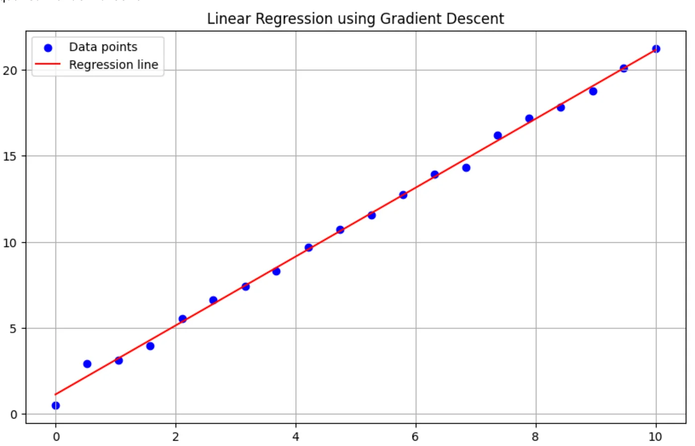

Intro
Here’s what this article is about: as an IT mentor at a Ukrainian company, I’ve had plenty of chances to notice a peculiar thing about developers. They can feel that something important is happening in machine learning and LLMs. Words like “neural networks” and “generative algorithms” come up constantly, and that triggers real curiosity about what’s actually underneath the concept. But…
And that “but” can be a real barrier. If you open a machine learning textbook, you quickly realize that before you reach the appealing chapter on neural networks, you have to work through a fairly long list of chapters first — linear regression, the perceptron, and several others. So you end up with the impression that to understand what a neural network actually is, and to get that first spark of interest to explore it yourself, you have to already know all of this.
From an academic standpoint, that’s undoubtedly necessary. If you want a holistic understanding of what machine learning is, or you need to pass a university exam, you don’t really have a choice but to read a manual cover to cover. But if you just want to feel and touch what this “magic” actually does (it’s not really magic, of course), I’d like you to try the explanations I’ve been using in my machine learning course for the past two years. Based on how it’s gone so far, I’d say most of the engineers who went through it can describe what a neural network is fairly close to how it actually works.
I won’t pretend this explanation has strict definitions or an academic style. Instead, it’s built around a principle familiar to most developers: when they want to start learning something new, they want to see a “Hello World” first. In other words, something relatively simple that still brings the essential core of the idea into the light and gives them a real shot at understanding the technology.
What we are going to do
There’s a common problem: when you go looking for a simple “Hello World”-style example in a Machine Learning course, you’ll most likely run into image recognition — distinguishing cats from dogs in photos. I’m not saying that example is necessarily bad (I’ve written a full walkthrough of exactly that one myself), but in my opinion it comes with so many extra details that, at first, they end up hiding the essentials of what a neural network actually is.
So in this article, we’ll walk through a real, working example of a simple neural network, written in Python, that learns to find the sum of two integers. I want to stress this: the code we write will not contain the actual “+” operation anywhere. Instead, it will be able to find the sum of two integers based on experience we give it the chance to gain.
I won’t pretend this requires nothing from you. To be precise, the audience I have in mind is software engineers who have no machine learning experience yet, but who won’t faint at a phrase like “linear regression.” They also don’t believe that the only skill you need to write enterprise applications is being good at searching GitHub and asking ChatGPT what to do next.
Linear regression
I’d say this is a genuinely necessary step toward understanding neural networks, because at its core, a neural network is a huge number of small tasks, and each of those tasks is, essentially, linear regression.
The explanation below doesn’t aim to be strictly academic. It’s designed specifically to give you a comfortable sense of understanding. After reading this article, I strongly recommend consulting more academic material.
So what do we actually mean by linear regression?
Let’s assume we have a tabular representation of some dependency. In my courses, I suspect that the more time a person spends studying, the higher the score they get on the final exam (I really hope that example feels intuitive). To confirm this, I’ve been gathering statistics from my students.
If your imagination, like mine, leaves something to be desired, you might want to see this dependency on a graph — even if you already vaguely feel that time spent studying should influence the final result somehow.
So let’s plot all these points on a graph: the X-axis holds the values for “time a student spent learning software development” — let’s call these values X — and the Y-axis holds “scores students got on the exam.”
Looking at a graph like that, it’s pretty easy to notice that these points closely resemble a simple geometric object: a line. We can think about it this way: if we have tabular data that clearly forms a dependency describable by a line, maybe we can compress that data down into something more compact and convenient — like the equation of a line? On top of the convenience of having a formula instead of a table, we also get to answer a different kind of question: what if a person spent not 10 days studying, but 20 — what score would they get?
So what do we actually need to do? We need to draw a line that’s as close as possible to all these points. Most students find this intuitively understandable, but I have to point out that there’s a strict academic definition of what “close” means — it’s called the Least Squares Method. If this is your first time reading about it, you should look into that method properly afterward. For now, if you’re willing to accept “the line is close to the points” on faith, that’s good enough to continue.
The algebraic representation of a line looks like this:
…where the \(\beta\)’s are the coefficients that define the line’s position on the graph. So we can reformulate “we have to draw the line so that it’s maximally close to these points” into a more precise statement: find values for both \(\beta\)’s so that the line’s equation takes the position we’ve been calling “close.”
Of course, there’s a proper way to do this, and the approach is called linear regression. I strongly believe you should read about the details of this process in more academic sources, but here I’ll just give you the Python code that takes our table of data as input and performs the linear regression. If that sentence didn’t tell you much, think about it this way instead: we have an input, which is tabular data, and we have an output, which is the coefficients \(\beta\). Once more:
INPUT → here something happens → OUTPUT
I’d suggest thinking about that again: something happens in the middle of this calculation process. As strange as it sounds, that’s really the core concept behind what we call a neural network — just in a very trivial form, of course.
Another point worth discussing: what we have here is a simulation of the learning process. Let’s clarify what we mean by “learning” in this context. Put simply, learning here means changing the coefficients of the linear equation. But not just changing them randomly — because learning usually implies comparing our current understanding against something we treat as ground truth. Think back to answering questions at school or university: the essence of that process was comparing the meaning you were trying to convey against your teacher’s or professor’s understanding of the correct answer. We have the same kind of “ground truth” here. If we somehow get some coefficients for the linear equation (no matter how — even picking random values works, just very inefficiently), draw the resulting line, and find that it isn’t “close” to the points, we have to admit those coefficients need improving. I think this is the second concept you need to internalize to understand neural networks: we need some way to verify our result against ground truth. That verification process is exactly what we mean by “learning.”
To stay consistent, let’s look at some Python code that does exactly what I just described: it calculates the coefficients of a line’s equation using gradient descent (if you don’t know what that is, you can look it up afterward), and it turns out that after enough calculation steps, our line ends up pretty “close” to our points.
import numpy as np
import matplotlib.pyplot as plt
# Our data
X = np.array([0.00, 0.53, 1.05, 1.58, 2.11, 2.63, 3.16, 3.68, 4.21, 4.74,
5.26, 5.79, 6.32, 6.84, 7.37, 7.89, 8.42, 8.95, 9.47, 10.00])
Y = np.array([0.50, 2.93, 3.13, 3.96, 5.54, 6.60, 7.42, 8.29, 9.69, 10.70,
11.56, 12.75, 13.94, 14.31, 16.18, 17.21, 17.85, 18.78, 20.13, 21.26])
# Normalize the features
X_norm = (X - np.mean(X)) / np.std(X)
# Add a column of ones to X for the intercept term
X_norm = np.column_stack((np.ones_like(X_norm), X_norm))
# Initialize parameters
theta = np.zeros(2)
# Set hyperparameters
alpha = 0.01 # Learning rate
num_iters = 1000
# Gradient Descent
for _ in range(num_iters):
h = np.dot(X_norm, theta)
gradient = np.dot(X_norm.T, (h - Y)) / len(Y)
theta -= alpha * gradient
# Convert parameters back to original scale
m = theta[1] / np.std(X)
b = theta[0] - m * np.mean(X)
print(f"Equation of the line: y = {m:.2f}x + {b:.2f}")
# Calculate R-squared
y_pred = m * X + b
ss_tot = np.sum((Y - np.mean(Y))**2)
ss_res = np.sum((Y - y_pred)**2)
r_squared = 1 - (ss_res / ss_tot)
print(f"R-squared value: {r_squared:.4f}")
# Plotting
plt.figure(figsize=(10, 6))
plt.scatter(X, Y, color='blue', label='Data points')
plt.plot(X, y_pred, color='red', label='Regression line')
plt.xlabel('X')
plt.ylabel('Y')
plt.title('Linear Regression using Gradient Descent')
plt.legend()
plt.grid(True)
plt.show()The output of this code looks like this:
Equation of the line: y = 2.01x + 1.11And finally, we get to see for ourselves that this line really is pretty close to our points.

Why do we need this?
Does this get us closer to understanding neural networks? My answer is yes. Let me go back once more to what we just did.
- We had an input: a set of data — the points, in our case.
- We did something with that data and got an output.
- We achieved this by changing the coefficients of the line’s equation in a more or less clever way.
- Our output looks drastically different from our input: tabular data versus a pair of numbers.
What if I told you that exactly the same principle is the foundation of a neural network? Quite literally: we have an input, we do something with that input (exactly what we do is a good question, but not the subject of this article), and finally, we get an output.
Now I’ll show you something very similar to what I just described above. We’re going to teach our code how to sum two numbers without using Python’s “+” operator. I’m serious! We’re going to write code that learns to sum two integers in almost exactly the same way linear regression does. Take note!
- We will have an input.
- We’re going to do something with this input. The details matter a lot, but not right now — “do something” means we’ll change the coefficients of some mathematical model, using some approach, a pretty large number of times. Remember what we were doing with linear regression: comparing how close our line was to the points. In our case, everything is simpler — if we ask for a sum, we precisely know the correct answer (or can always calculate it).
- We will have an output: some set of coefficients for a mathematical model that can accept two integers and, without actually summing them, give us an answer.
Of course, this output will stay hidden from us — we’ll only ever get to use the learned model, asking it to sum our integers for us.
Sum of two integers without using “+” operator
import tensorflow as tf
import numpy as np
# Generate training data with a wider range
np.random.seed(0)
X = np.random.randint(0, 1000, size=(10000, 2)) # 10000 pairs of numbers between 0 and 999
y = np.sum(X, axis=1)
# New normalization strategy
X_max = 1000.0
y_max = X_max * 2
X_norm = X / X_max
y_norm = y / y_max
# Define a slightly more complex model
model = tf.keras.Sequential([
tf.keras.layers.Dense(64, activation='relu', input_shape=(2,)),
tf.keras.layers.Dense(64, activation='relu'),
tf.keras.layers.Dense(1)
])
# Compile the model
model.compile(optimizer='adam', loss='mse')
# Train the model
history = model.fit(X_norm, y_norm, epochs=100, validation_split=0.2, verbose=0)
# Test the model
test_input = np.array([[400, 200]])
test_input_norm = test_input / X_max
prediction = model.predict(test_input_norm)
predicted_sum = prediction[0][0] * y_max
print(f"Input: {test_input[0]}")
print(f"Predicted sum: {predicted_sum:.2f}")
print(f"Actual sum: {np.sum(test_input[0])}")
# Print final loss
print(f"Final loss: {history.history['loss'][-1]:.6f}")
# Test with more examples
test_cases = [[5, 7], [100, 200], [400, 200], [999, 999]]
for case in test_cases:
test_input = np.array([case])
test_input_norm = test_input / X_max
prediction = model.predict(test_input_norm)
predicted_sum = prediction[0][0] * y_max
print(f"\nInput: {case}")
print(f"Predicted sum: {predicted_sum:.2f}")
print(f"Actual sum: {sum(case)}")This article is aimed at developers, but if you’re not one, or you’re just reading out of curiosity, I’ll walk through this code to emphasize the key concept behind it.
First, remember our core concept: we have input that lets us teach our model. By “teaching,” I mean we can compare what our model gives us against the correct value, every time, and make some adjustment to the model based on that. That’s exactly what we mean by “learning.” The good news is that all of this complexity is hidden away, thanks to how nicely modern Python libraries encapsulate it.
Let’s go step by step. First, we prepare the data for learning:
# Generate training data with a wider range
np.random.seed(0)
X = np.random.randint(0, 1000, size=(10000, 2)) # 10000 pairs of numbers between 0 and 999
y = np.sum(X, axis=1)I don’t think this code needs much explanation, except maybe the last line: if X is a tensor of integer pairs bounded by 1000, then y ends up holding the sum of the integers in each pair.
And… everything after that line, up until
# Train the model
history = model.fit(X_norm, y_norm, epochs=100, validation_split=0.2, verbose=0)…is what we call learning. If this is your first time seeing something like this, I’d suggest thinking about the code the following way for now (you’ll definitely want to come back to a more academic explanation later):
- OK, we have 10,000 pairs of integers and their sums.
- Each of these pairs goes through some equation where the unknowns are our pair of numbers, and the result of the equation is meant to be the sum of those numbers.
- We feed these pairs and sums into the equation 10,000 times, and solve it a little more each time.
- Our goal is to find coefficients for this equation such that, when we plug in a pair of integers in place of the unknowns, we can compare the result against the known correct answer and decide whether to keep improving our coefficients or whether they’re good enough already.
Let me walk you through this step by step:
- We have some equation where x and y are the unknown inputs.
- We have coefficients a and b, which are also unknown at first.
- We assign them some default starting values.
- We plug our first pair of integers into the equation and make a prediction — in other words, we calculate this function’s version of “the sum.”
- Since we know the real sum for this pair (our Python code can always calculate it), we can compare how large the error is — we call this the loss.
- If the loss is too big, we adjust a and b somehow.
- We keep doing this for quite a while.
- And there’s a very good chance we’ll eventually find coefficients that, for pretty much any pair of integers, give us a number close enough to their actual sum.
- We’re done.
Of course, there are plenty of questions you could ask here — about the type of equation, about the mathematical method used for the calculation, about the exact steps in the Python code. But at this point, I think it’s more important to grasp the main idea behind neural networks: we can calculate the result of some function, compare it against a known value, and adjust the function’s parameters accordingly. That, basically, is what learning is.
Now it’s time to test what we’ve got. If you run the code, you’ll get something similar to this:
1/1 ━━━━━━━━━━━━━━━━━━━━ 0s 85ms/step
Input: [400 200]
Predicted sum: 597.78
Actual sum: 600
Final loss: 0.000002
1/1 ━━━━━━━━━━━━━━━━━━━━ 0s 28ms/step
Input: [5, 7]
Predicted sum: 11.58
Actual sum: 12
1/1 ━━━━━━━━━━━━━━━━━━━━ 0s 33ms/step
Input: [100, 200]
Predicted sum: 297.75
Actual sum: 300
1/1 ━━━━━━━━━━━━━━━━━━━━ 0s 33ms/step
Input: [400, 200]
Predicted sum: 597.78
Actual sum: 600
1/1 ━━━━━━━━━━━━━━━━━━━━ 0s 35ms/step
Input: [999, 999]
Predicted sum: 1989.17
Actual sum: 1998As you can see, in every test case (hardcoded here, of course — it’d be well worth trying your own numbers) our answers come out pretty close to the exact ones. For example:
Input: [100, 200]
Predicted sum: 297.75
Actual sum: 300So we can draw a cautious conclusion: despite making some errors, our network generally calculates pretty well for something that doesn’t actually know what “sum” means, and only learned about it through the calculations we walked through. You might reasonably ask: why aren’t the results exact? The full answer would take too long to unpack here, but in short — because we’re not summing the integers, we’re performing an approximate calculation, and approximations, by definition, can’t be exact on a computer.
So how to teach a neural network to subtract integers?
Sure — and not just integers, but any numbers you’d like your neural network to learn to work with. I’m pretty sure you’ve already got the idea: you generate pairs of numbers and the result of subtracting them. This time, you won’t even have that nagging doubt some of my students raise — “Hold on, the line’s equation already has a plus sign in it, so isn’t that cheating somehow?” To be completely sure the neural network isn’t secretly relying on magic, and is genuinely calculating subtraction fairly, you’re free to experiment yourself. And you don’t have to stop at subtraction — feel free to teach your neural network whatever your imagination allows: multiplication, division, solving equations, and more. It’s a great next step to try.
At this point, you might even be ready to understand the concept behind how neural networks recognize images. For example, let’s say you have 1,000 photos of cats and 1,000 photos of dogs, and for some reason you’d like to teach your neural network to identify whether any arbitrary photo contains a cat or a dog.
You can think about this the same way. OK, I have images of cats — that’s my input. For every one of these images, I know exactly what’s depicted in it. So maybe the specific combination of pixels that makes up a cat, in any given case, can give me some numeric characteristic that identifies “cat-ness”? Finding that characteristic is a genuinely hard question, but if we manage to find it, it means we can describe any cat using some sequence of values. If we then take any unknown image and calculate that same characteristic again, we can compare the two results with some degree of confidence and say: if the unknown image’s values are reasonably close to the values I got while training my network, then maybe this unknown image contains a cat too! There we go.
You can obviously extend this approach to almost anything where you can spot the same pattern: we have an input, we have a desired output, and we can verify how good our output is. After walking through this with students, I usually propose the following: pretty much everyone knows what a quadratic equation is. Nothing stops you now from training a neural network to learn how to solve one. All you need is a list of coefficients, and the roots that correspond to each set of coefficients. Sure, it’s a bit harder than simply summing integers, but it’s more than realistic. So go ahead and give it a try!